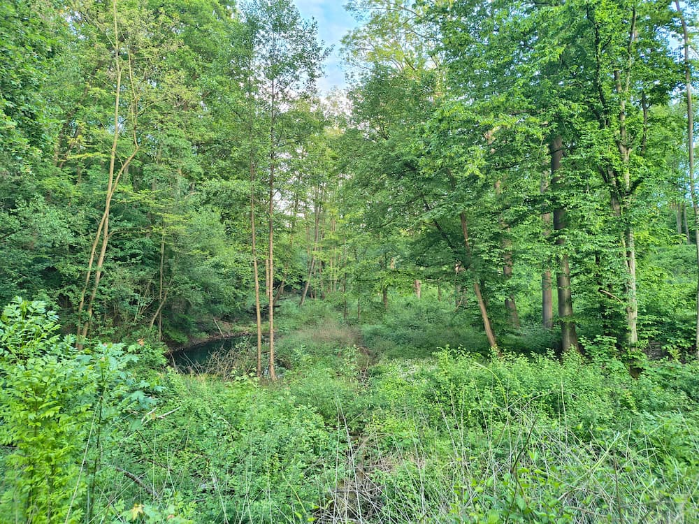
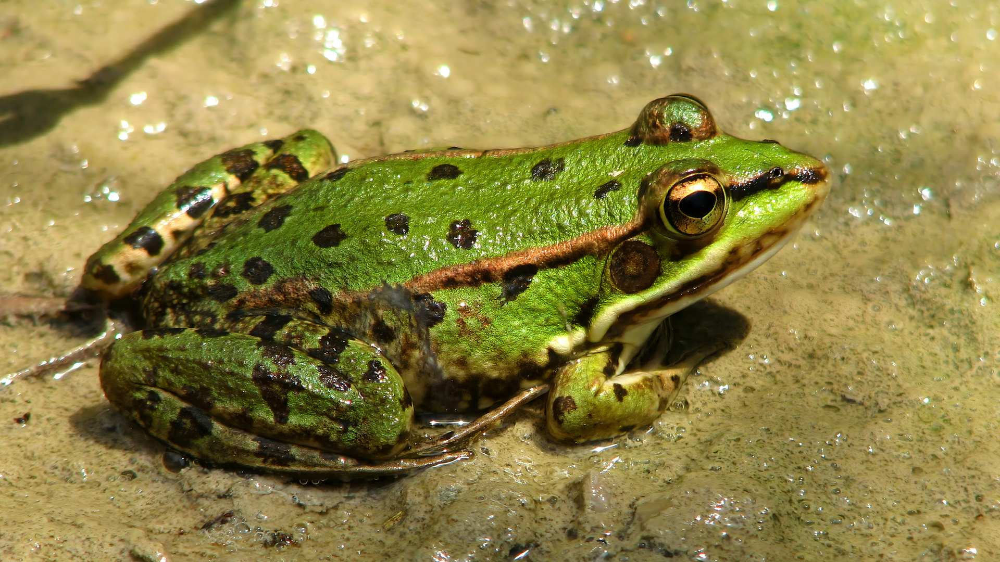
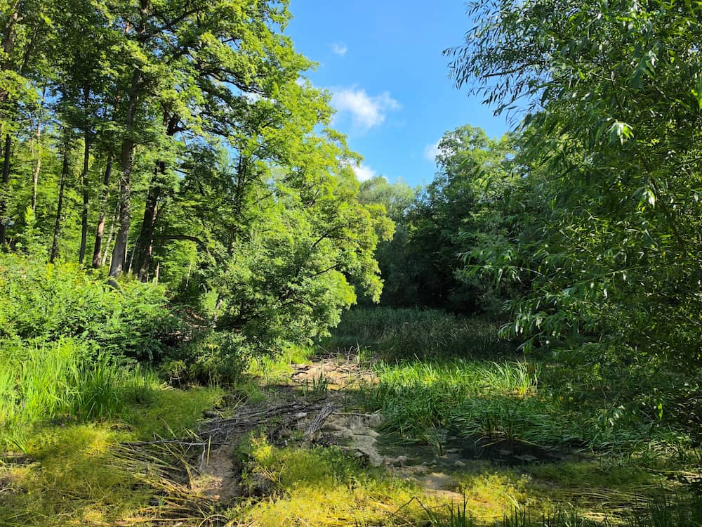
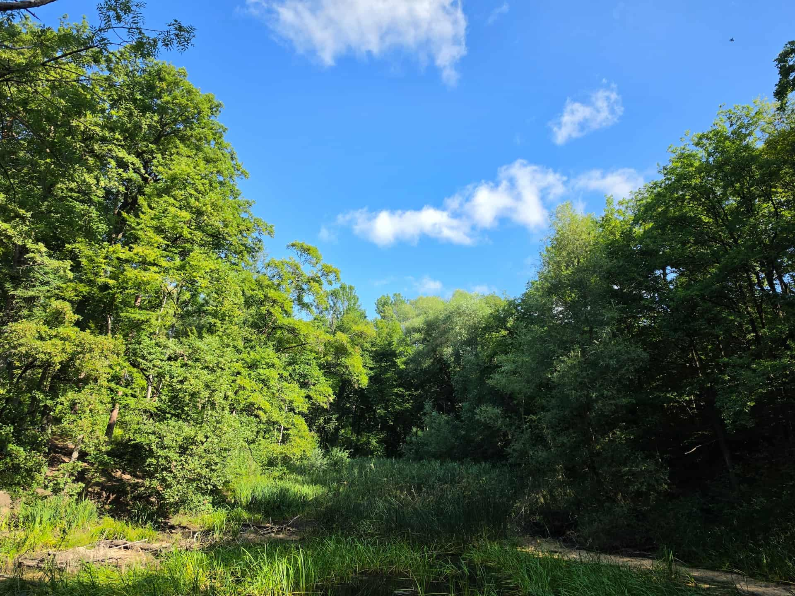
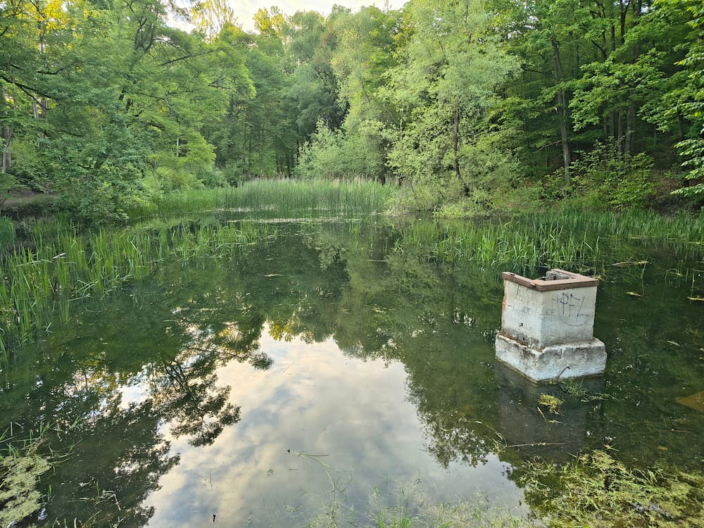

V lokalitě Zaječí potok najdeme tři rybníky, které dlouhodobě chátrají a přestávají plnit svou přirozenou funkci. I přesto jsou dnes domovem pro 25 zvláště chráněných druhů, mezi nimi 7 druhů obojživelníků, kteří jsou na vodu bytostně vázaní. Od podzimu 2026 proto rybníky i jejich okolí čeká citlivá revitalizace, díky které se sem vrátí čistá voda, pestrá příroda i příjemné prostředí pro procházky.

Rozumíme, že plánované kácení dřevin a dočasné omezení přístupu do lokality může vzbuzovat obavy. Po celou dobu stavby proto na místě dohlíží biologický dozor, který před zahájením každé etapy prací vyhodnotí aktuální situaci a přizpůsobí jí postup. Kácet budeme jen v nezbytně nutné míře a v období vegetačního klidu, kdy to nejméně ovlivní zvířata žijící v okolí. Část odumřelých stromů navíc záměrně necháme na místě jako útočiště pro brouky a další živočichy. Dočasné omezení má jasný cíl: rybníkům vrátit jejich přirozenou funkci, zajistit domov desítkám druhů obojživelníků, ptáků a dalších chráněných živočichů na desítky let dopředu a zároveň lokalitu zpříjemnit i lidem, kteří si sem chodí odpočinout.
Proč rybníky potřebují pomoc
Rybníky se postupně zanášejí bahnem a ztrácejí schopnost zadržet vodu (odborně: retenční kapacita) – nejhůř je na tom horní rybník, nejlépe dolní. Hráze a výpustě (požeráky) jsou poškozené, takže dnes nejde hladinu vody nijak regulovat. Kvůli tomu rybníky přestávají dobře plnit svou funkci jako domov pro chráněné druhy vázané na vodní prostředí.
Lokalita je zároveň oblíbeným místem k procházkám a odpočinku, což na citlivou přírodu v okolí klade další tlak.

Jak jim pomůžeme
Všechny tři rybníky projdou opravou: odbahníme je, upravíme jejich břehy, odstraníme přerostlé náletové křoví a stromy a u vody vytvoříme pestrý pás mokřadní vegetace (litorální zóna), ve kterém se obojživelníkům dobře daří. Přibude i pět nových tůní a mokřad, který zachytí splaveniny z okolí.
Pro další podporu přírody necháme část odumřelých stromů zůstat na místě (jsou útočištěm pro brouky a další živočichy) a doplníme broukoviště a hadníky, tedy úkryty pro hmyz a plazy. O průběhu prací budou veřejnost informovat dvě velké naučné tabule, po dokončení revitalizace pak i dvě veřejná setkání přímo v terénu.
Výsledkem nebude jen kvalitnější domov pro chráněné druhy, ale i příjemnější a upravenější místo pro procházky a odpočinek obyvatel okolních čtvrtí.
Chráněné druhy
Na revitalizaci nám záleží hlavně kvůli živočichům, kteří tu i v současném zanedbaném stavu žijí. V souhrnu tří rybníků bylo zjištěno 7 druhů obojživelníků (6 zákonem chráněných): ropucha obecná, skokan štíhlý a skokan hnědý (ve všech třech rybnících), dále rosnička zelená, skokan zelený komplex, čolek horský a čolek obecný v prostředním rybníku. Z dalších druhů vázaných na vodu se zde vyskytují užovka obojková, ledňáček říční a netopýr vodní.

Fotogalerie lokality



Co revitalizace přinese
- 3 ks zrevitalizovaných rybníků
- 5 nových tůní a sedimentační mokřad
- 2 ks edukativních tabulí
- 2 veřejná setkání na lokalitě po dokončení
Realizace
- Zahájení IX/2026, dokončení cca VI/2028
- Dokumentace: ATELIER FONTES, s.r.o., stavební povolení vydáno 03/2025
- Realizace: KAVYL spol. s r.o.
- Technický a autorský dozor: Atregia s.r.o.
- Grafický návrh tabulí: ASITIS s.r.o.
Harmonogram revitalizace
Kácení a odstranění náletových dřevin
V lese i mimo něj odstraníme jen nezbytně nutné množství náletového křoví a stromů kolem rybníků, břehů a hrází, a to pod dohledem biologického dozoru. Z bezpečnostních důvodů bude nutné dotčené území po dobu prací dočasně uzavřít.
Předání staveniště, vypuštění rybníků
Staveniště přebírá zhotovitel KAVYL spol. s r.o. Následuje vypuštění rybníků a odvoz sedimentu, což bude spojeno s pohybem těžké techniky (bagry, nákladní automobily).
Stavební a revitalizační práce
Vlastní práce probíhají vždy jen v období od září do března. Každý rok se stavba na duben až červenec přerušuje – jde o dobu rozmnožovacího cyklu obojživelníků, kterou nesmí stavba narušit.
Dokončení revitalizace
Dokončení odbahnění, úpravy břehů, nových tůní a zachytávacího mokřadu i doplňkových prvků pro přírodu, jako jsou broukoviště a hadníky.
Kolaudace
Dokončený projekt bude zkolaudován, čímž se splní i podmínky financování z Programu Švýcarsko-české spolupráce.
Časté otázky veřejnosti
Kácení proběhne jen v nezbytně nutném rozsahu. Odstraní se výhradně náletové dřeviny v prostoru rybníků, břehů a hrází, které jsou v kolizi se zemními pracemi a brání obnovení otevřeného charakteru vodních ploch. Torza stromů, souše a padlé kmeny zůstanou na místě jako útočiště pro brouky a další živočichy. Kácení proběhne v době vegetačního klidu a pod dohledem odborně způsobilé osoby (biologický dozor); ostatní stromy budou při stavbě odborně chráněny podle standardu AOPK ČR.
Cílem revitalizace je jejich populace naopak posílit. Práce jsou naplánované mimo rozmnožovací období – každý rok se od dubna do července přerušují. Po celou dobu výstavby je v lokalitě přítomen biologický dozor, který před zahájením každé etapy vyhodnotí situaci a případně upraví postup či termíny. Pro zákonem chráněný druh skokana zeleného komplex proběhne před zahájením prací odchyt a záchranný přenos na základě udělené výjimky. Počet vodních ploch se rozšíří ze 3 na 9, což dlouhodobě zlepší podmínky pro rozmnožování všech zjištěných druhů.
Nepůvodní ryby, které jsou predátory obojživelníků, budou z rybníků odstraněny, aby se zlepšily podmínky pro rozmnožování chráněných druhů.
Ano, z bezpečnostních důvodů bude nutné dotčené území po dobu prací dočasně uzavřít. Konkrétní podobu uzavírky (zda celé území najednou, nebo po etapách, a jak bude lokalita zpřístupněna mezi jednotlivými fázemi) v tuto chvíli řešíme společně s dotčenými městskými částmi. Informace zveřejníme na webu a při veřejném setkání v srpnu 2026.
Ano. Po vypuštění rybníků proběhne odvoz sedimentu, což bude spojeno s pohybem bagrů a nákladních automobilů. Konkrétní informace o frekvenci průjezdů v tuto chvíli finalizujeme s dotčenými městskými částmi a zveřejníme je s dostatečným předstihem.
Stavební a revitalizační práce probíhají postupně od září 2026 do poloviny roku 2028, vždy jen v období od září do března. Každý rok se práce od dubna do července přerušují, protože v tomto období probíhá rozmnožovací cyklus obojživelníků, který stavba nesmí narušit. Harmonogram proto počítá s dostatečnou časovou rezervou.
Ano, během realizace budou probíhat veřejné kontrolní dny, na kterých bude možné sledovat postup prací přímo v lokalitě. Termíny budou zveřejněny na webu a sociálních sítích projektu.
Dotazy veřejnosti zajišťuje konsorcium projektu, které zaručuje jednotné a aktuální odpovědi. Napište nám prostřednictvím kontaktního formuláře nebo kontaktů uvedených v patičce stránky.